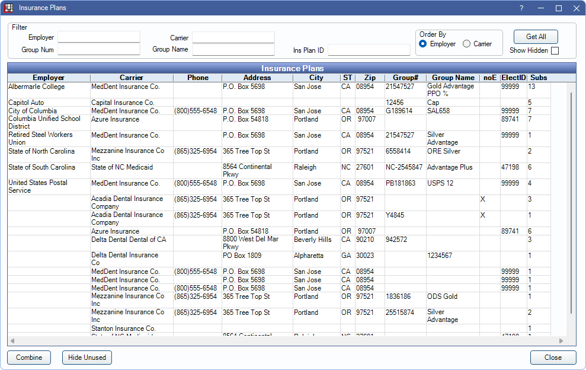

Insurance Plans
Use the Insurance Plans list to review all insurance plans entered in Open Dental.
In the Main Menu, click Lists, Insurance Plans.
Alternatively: from the Insurance Plan Edit Window, click Pick From List.
See also:
- Add Insurance
- Change Insurance Plan Information
- Drop Insurance Plan
- Move Subscribers
 See our video: QuickTip: Reordering Patient Insurance Plans.
See our video: QuickTip: Reordering Patient Insurance Plans.
Filters
To narrow or sort the list of plans, enter filter criteria. Results update automatically. The first 200 results matching filter criteria display by default.
- Employer: Enter Employer name.
- Group Num: Enter insurance plan Group Number..
- Carrier: Enter Insurance Carrier name.
- Group Name: Enter insurance plan Group Name.
- Trojan ID: Only visible if the Trojan Bridge is enabled. Enter Trojan ID number.
- Ins Plan ID: Enter Insurance Plan ID number. This number is system-generated and visible on the Edit Insurance Plan window.
Order By: Select the sort order of the list.
- Employer: Sort alphabetically by employer name.
- Carrier: Sort alphabetically by carrier name.
Get All: Click to view all results that matching the filter criteria. Results are not limited to 200.
Show Hidden: Include/exclude plans that have been marked Hidden on the Edit Insurance Plan window
Insurance Plans
Each line entry refers to an individual plan. The number of plan subscribers is indicated under the Subs column. Double-click a plan to view carrier, plan, and benefit information.
Most columns are self-explanatory, below are descriptions of columns that may need additional explanation:
- noE: X in this column indicates Don't Send Claims Electronically has been marked for the insurance carrier attached to this plan.
- ElectID: Electronic Payer ID for the carrier.
- Subs: Total subscribers associated to the plan.
- TrojanID: Only used by Trojan Bridge users.
Combine: Combine duplicate plans into a single plan. See Combine Insurance Plans.
Hide Unused: Mark plans with 0 subscribers as hidden.
Blank Plan: Only visible when the list is accessed via the Edit Insurance Plan window. Click to open a blank Edit Insurance Plan window.
Questions and Answers
I have duplicate insurance plans in the list. Why and how do I fix this?
There are a few reasons offices may have duplicate plans. Sometimes plans look the same, but when the details are examined they are different. What appear to be duplicate entries are really different plans that share the same employer, carrier, group name, group number. Double-click an insurace plan to check:
- Benefits (percentages, annual max, other benefits, benefit year)
- Fee schedule assignments
- Plan type
If users created new insurance plans by mistake instead of using an existing plan, you can combine insurance plans. Combining is irreversible and changes historical data. See Combine Insurance Plans.
To avoid creating new plans inadvertently, follow these guidelines:
- When changing a plan for all subscribers via the Edit Insurance Plan window, make sure Change plan for all subscribers is selected.
- When entering a plan for a new patient, search for matching plans before creating a new plan (Pick from List).